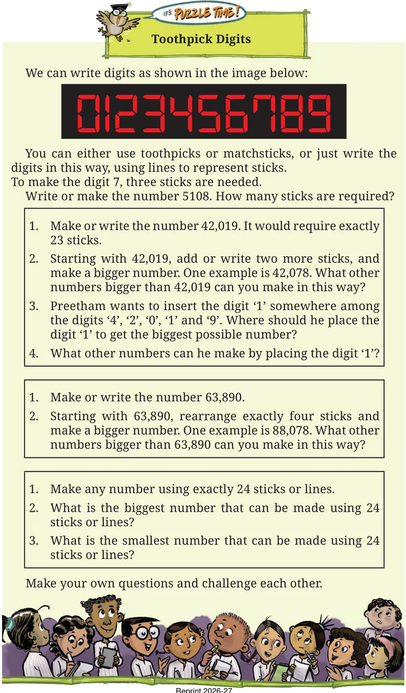

- We came across large numbers — lakhs, crores and arabs; millions and billions. We learnt how to read and write these numbers in the Indian and American/International naming systems.
- 1 lakh is 1 followed by 5 zeroes: 1,00,000
- 1 crore is 1 followed by 7 zeroes: 1,00,00,000
- 1 million is 1 followed by 6 zeroes: 1,000,000 (which is also ten lakhs)
- 1 arab is 1 followed by 9 zeroes: 1,000,000,000 (which is also 100 crore or 1 billion)
- We generally round up or round down large numbers. Many times it is enough just to know roughly how big or small something is.
- To get a sense of large numbers or quantities, we can check how many times bigger they are compared to numbers or quantities that are more familiar.
- We saw how to factorise numbers and regroup them to make multiplications simpler.
- We carried out interesting thought experiments such as — "Would one be able to watch 1000 movies in a year?"
